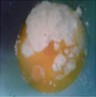
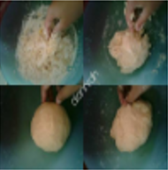

Ketuhanan Yang Maha Esa
Kemanusiaan Yang Adil dan Beradab
Persatuan Indonesia
Kerakyatan yang dipimpin oleh hikmat kebijaksanaan dalam permusyawaratan perwakilan

Keadilan sosial bagi seluruh rakyat Indonesia
1. Campur semua bahan roti menjadi satu
2. Uleni pakai kalis(aku pakai tangan) jangan takut jika adonan lengkat ya, lumuri tangan sesekali dg tepung( tapi jangan menambahkan tepung) uleni terus sampai adonan kalis.
3. Kalisnya adonan canai tidak sekilas adonan roti ya, kira2 seperti ini sudah cukup
| NIS | Nama | Bulan | ||||||||
|---|---|---|---|---|---|---|---|---|---|---|
| Januari | Februari | Maret | ||||||||
| S | I | A | S | I | A | S | I | A | ||
| 111 | Zulkarnaen | 0 | 2 | 0 | 0 | 0 | 0 | 0 | 1 | 0 |
| 112 | Zulkifli | 10 | 2 | 3 | 21 | 9 | 0 | 20 | 30 | 2 |
| No. | Nama Lengkap | NIK | Jenis Kelamin |
Tempat Lahir | Tanggal lahir |
Agama | Pendidikan | Jenis Pekerjaan |
|---|---|---|---|---|---|---|---|---|
| (1) | (2) | (3) | (4) | (5) | (6) | (7) | (8) | |
| 1. | Zainal Ibrahim | 127554921986 | Laki-Laki | Malang | 19-08-1965 | Surabaya | S1 | Pengusaha |
| 2. | Cantika Rahma | 109721841986 | Perempuan | Malang | 19-12-19870 | Islam | D3 | Ibu Rumah Tangga |
| 3. | Fakhrur Gazhali | 109274831986 | Laki-Laki | Malang | 06-01-1997 | Islam | S1 | Mahasiswa |
| 4. | Zahra Pawestri Aulia | 0917247389208251 | Perempuan | Surabaya | 26-10-2001 | Islam | S1 | Mahasiswa |
| 5. | Andra Rahmad Fauzi | 3561735392310011 | Laki-Laki | Surabaya | 01-07-2006 | Islam | SMA | Siswa |
| 6. | Calista Putri Wahayu | 09712465611941792 | Perempuan | Surabaya | 20-01-2010 | Islam | SMP | Siswi |
| 7. | ||||||||
| 8. | ||||||||
| 9. | ||||||||
| 10. |
| No. | Status Perkawinan |
Tanggal Perkawinan |
Status Hubungan Dalam Keluarga |
Kewarganegaraan | Dokumen Imigrasi | Nama Orang Tua | ||
|---|---|---|---|---|---|---|---|---|
| No. Paspor | No. KITAP | Ayah | Ibu | |||||
| (9) | (10) | (11) | (12) | (13) | (14) | (15) | (16) | |
| 1. | Kawin | 20-10-1992 | Kepala Keluarga | WNI | - | - | Supardi Yanto | Wahyuning Antasari |
| 2. | Kawin | 20-10-1992 | Istri | WNI | - | - | Muhammad Agus Suprianto | Indah Kinanti |
| 3. | Kawin | 14-12-2022 | Anak | WNI | - | - | Zainal Ibrahim | Cantika Rahma |
| 4. | Belum Kawin | - | Anak | WNI | - | - | Zainal Ibrahim | Cantika Rahma |
| 5. | Belum Kawin | - | Anak | WNI | - | - | Zainal Ibrahim | Cantika Rahma |
| 6. | Belum Kawin | - | Anak | WNI | - | - | Zainal Ibrahim | Cantika Rahma |